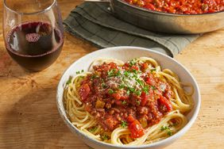

Spaghetti Carbonara

Description
A rich and creamy Italian pasta dish made with eggs, cheese, pancetta, and pepper. This traditional recipe is simple yet indulgent, perfect for a quick dinner that feels like a treat.
Ingredients
- 12 ounces spaghetti
- 2 large eggs
- 1 cup grated Parmesan cheese
- 4 ounces pancetta, diced
- 2 cloves garlic, minced
- Salt, to taste
- Freshly ground black pepper, to taste
- 2 tablespoons chopped parsley (optional)
Steps
- Bring a large pot of salted water to a boil. Cook spaghetti until al dente. Reserve 1 cup of pasta water, then drain.
- In a small bowl, whisk together eggs and Parmesan cheese until well combined.
- In a skillet over medium heat, cook pancetta until crispy. Add minced garlic and cook for 1 minute more. Remove from heat.
- Quickly add the hot, drained pasta to the skillet and toss to coat.
- Slowly pour in the egg and cheese mixture, stirring constantly to create a creamy sauce (add reserved pasta water as needed).
- Season with salt and freshly ground black pepper. Top with parsley if desired and serve immediately.
Home